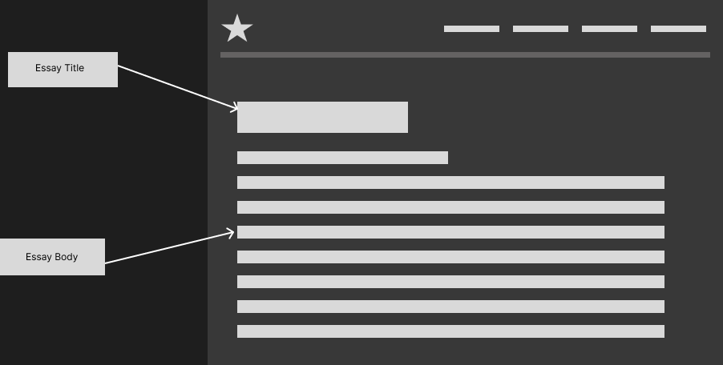
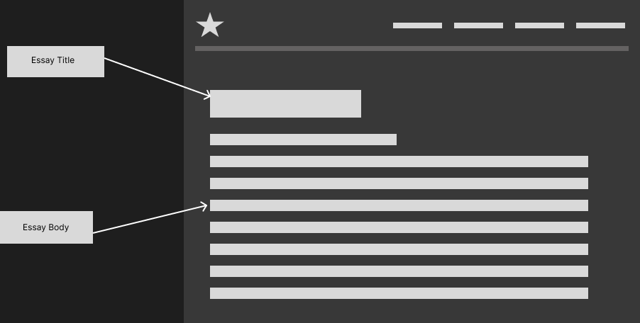

Wireframes
Home Page

Here is my wireframes for my website, I have maintained this design as I noticed it was common amongst car
websites.
The reason as to why I chose this design version was because of how popular it was amongst car websites,
however seeing
as that the assignment also focuses on creativity and design principles. I am going to express my
individuality through
the execution of certain images and graphics as well as colour pallets.
Data Visuals Page


The data visualization page includes two visualizations:
So here within my data visualization page I make use of two visualizations, a notebook that demonstrates
using d3.interpolateZoom to implement smooth pan-and-zoom transitions between two views, these views will be
images of the cars from the front, each of the circle represents the cars as an item, I have also added a
visual that makes use of a sort of bar graph feature however the x values are not shown but rather the y
value is just used as a sort of name tag for the bar, In my case the image of the bar will be changed with
the image of a side view of the vehicle.
Moreover, both of the visuals will have a little extra feature, once the cursor of the user hovers over the
item or the image of the car in both visuals, there will be a little pop up that displays more information
on the car, such as pricing, gasoline intake and model number etc.
Design and Theory Page
 

The page design is quite simple, the page just makes use of two big graphics to fill up the negative space
within the page, the respective information can be reached with a large, labelled button. The information
will also be colour coded to keep the aesthetic of the webpage consistent. The information will also be
centred and not touch the borders of the page as to not make the user feel cramped.